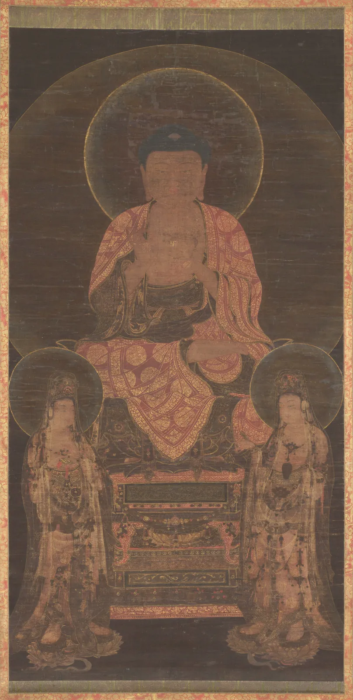
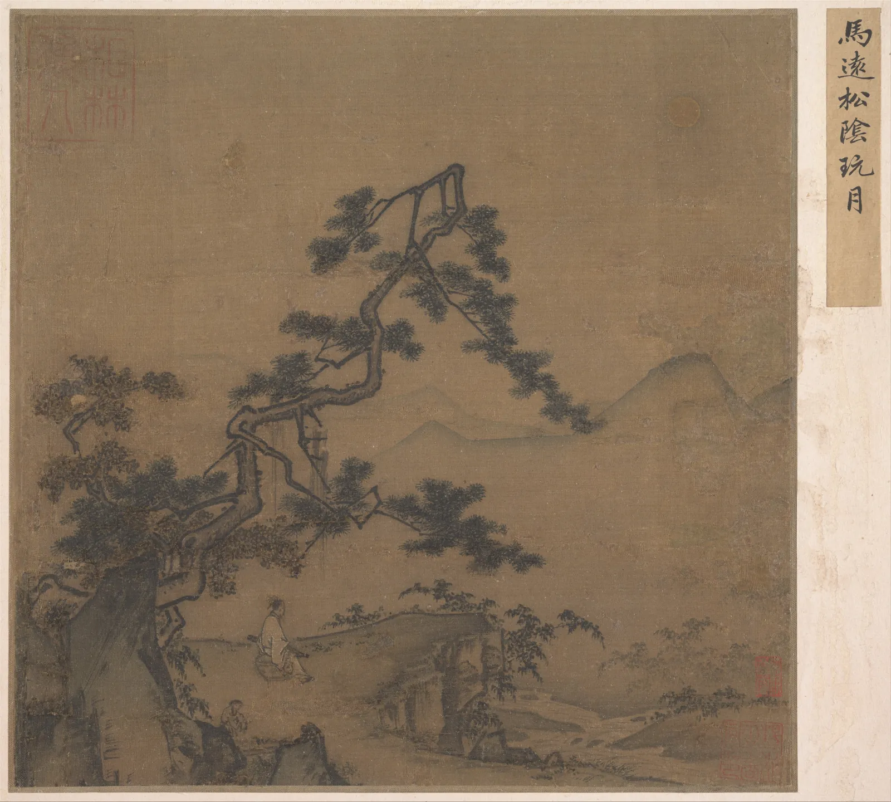

균형
거실 벽의 액자가 1도만 기울어도 지나갈 때마다 눈에 걸린다. 그런데 화면 한쪽에 큰 회색 덩어리를 두고 반대쪽 구석에 작은 빨간 점 하나를 찍으면, 무게가 전혀 다른 두 물체가 이상하게 맞서 보인다. 화면 안의 물체에는 실제 무게가 없는데도 우리는 무겁다, 가볍다, 기울었다, 안정됐다고 말한다. 이 장은 그 "보이는 무게"가 무엇으로 정해지는지 하나씩 떼어 보고, 시소처럼 단순한 모형으로 화면의 무게중심을 잰다. 그리고 그 모형이 어디서 맞고 어디서 틀리는지, 균형을 일부러 깨뜨린 그림이 왜 좋을 수 있는지도 함께 본다.
- 좌우 대칭과 방사 대칭을 구별하고, 대칭이 조금 깨졌을 때와 크게 깨졌을 때 읽히는 방식이 다르다는 것을 확인한다.
- 시각적 무게를 키우는 요인(크기, 명도 대비, 채도, 위치, 고립)을 하나씩 바꿔 보며 그 방향을 익힌다.
- 지렛대 모형으로 화면의 무게중심을 계산하고, 그것이 교육용 근사라는 한계를 안다.
- 비대칭 균형(작고 강한 것 대 크고 약한 것)을 만들고, 동아시아 회화의 한쪽 구석 구도를 무게의 눈으로 읽는다.
- 균형을 일부러 깨뜨려 긴장과 움직임을 만들 때, 어중간한 어긋남과 분명한 기울기의 차이를 구별한다.
기울어 보이는 화면
아래 그림의 세 액자에는 똑같은 두 물체가 들어 있다. 연한 큰 사각형 하나와 짙은 작은 원 하나. 놓인 자리만 다르다. 왼쪽 액자는 한쪽으로 기울어 보이고, 가운데 액자는 단단하지만 조금 심심하고, 오른쪽 액자는 두 물체가 서로 다른 자리에 있는데도 버티고 서 있다.
이렇게 화면 안의 요소들이 한쪽으로 쏠리지 않고 서로 버티는 상태를 균형(Balance)이라고 한다. 그리고 그 버팀을 따질 때 쓰는 "보이는 무게"를 시각적 무게(Visual weight)라고 한다. 눈길을 얼마나 세게 잡아당기고, 화면을 얼마나 그쪽으로 끌어내리는 것처럼 느껴지는지의 정도다. 실제 물리적 무게와는 상관이 없다. 종이 위의 검은 점과 흰 점은 무게가 같지만, 흰 종이 위에서는 검은 점이 훨씬 무겁게 보인다.
미술 심리학자 루돌프 아른하임(Rudolf Arnheim, 1904–2007)은 『미술과 시지각』(Art and Visual Perception, 1954, 개정판 1974)에서 화면을 힘이 오가는 장으로 설명했다. 요지를 요약하면 이렇다. 네모난 화면에는 가운데, 두 대각선, 가로·세로 중심선 같은 보이지 않는 "뼈대"가 있고, 그 위에 놓인 요소는 자리에 따라 안정되어 보이거나 어딘가로 끌려가는 것처럼 보인다. 균형은 그 힘들이 서로 상쇄되어 "더 움직일 필요가 없어 보이는" 상태다. 이 설명은 실험으로 정밀하게 검증된 법칙이라기보다 관찰에 바탕을 둔 틀이지만, 화가와 디자이너가 화면을 이야기하는 말의 상당 부분이 여기서 나왔다. 2장에서 점 하나의 위치가 만드는 긴장을 봤다면, 이 장은 여러 요소의 긴장을 한꺼번에 더하고 뺀다.
대칭: 가장 쉬운 균형
균형을 얻는 가장 쉬운 방법은 같은 것을 양쪽에 두는 것이다. 한가운데 세로축을 기준으로 왼쪽과 오른쪽이 거울에 비친 듯 같으면 좌우 대칭(Bilateral symmetry), 한 점을 중심으로 같은 모양이 돌아가며 놓이면 방사 대칭(Radial symmetry)이다. 같은 모양이 한 방향으로 미끄러지듯 되풀이되는 병진 대칭(Translational symmetry)도 있는데, 그것은 8장의 반복과 리듬으로 이어진다.

대칭은 강하다. 좌우가 같으면 눈은 무게를 따질 필요도 없이 화면이 바로 섰다고 느낀다. 그래서 대칭은 오래도록 권위, 신성, 의식, 영원 같은 뜻과 함께 쓰였다. 종교화의 삼존 구도, 궁궐과 사당의 정면, 공문서의 머리말이 대칭인 것은 우연이 아니다. 대신 대칭은 정지해 있다. 눈이 화면을 돌아다닐 이유가 줄어들고, 오래 보면 심심해지기 쉽다.
그리고 대칭에는 까다로운 성질이 하나 있다. 아주 조금 깨진 대칭은 의도로 읽히지 않고 실수로 읽히기 쉽다. 정면 사진에서 얼굴이 2도 기울면 "삐뚤게 찍혔다"고 느끼지, "역동적이다"라고 느끼지 않는다. 아래에서 직접 대칭을 깨뜨려 본다. 오른쪽 절반의 도형은 끌어서 옮길 수 있다.
대칭을 깨뜨리기
대칭도라는 숫자와 느낌이 어긋나는 구간이 있다는 것이 핵심이다. 대칭도 90% 근처의 화면은 숫자로는 "거의 대칭"이지만, 눈은 그 10%를 오류로 잡아낸다. 대칭도가 60%까지 떨어지면 오히려 편안해진다. 눈이 더 이상 대칭을 기대하지 않기 때문이다. 그래서 대칭을 깨뜨릴 때는 분명하게 깨뜨리거나, 그림 2처럼 큰 틀은 지키고 세부에서만 다르게 하는 쪽이 안전하다. 어중간한 어긋남이 가장 불편하다.
무엇이 무겁게 보이는가
대칭이 아니라면 양쪽의 무게를 따져야 한다. 화가와 디자이너들이 오랫동안 경험으로 정리해 온 시각적 무게의 요인은 대략 다음과 같다. 대부분은 "눈길을 더 세게 끄는 것이 더 무겁다"는 한 문장으로 묶인다.
| 요인 | 더 무거워 보이는 쪽 | 메모 |
|---|---|---|
| 크기 | 더 큰 것 | 가장 강하고 확실한 요인. 넓이에 비례한다고 보는 것이 출발점이다. |
| 명도 대비 | 바탕과 명도 차이가 큰 것 | 흰 바탕 위에서는 검은 것이, 검은 바탕 위에서는 흰 것이 무겁다. 어둡다고 무조건 무거운 것이 아니다(ColorBook 6장). |
| 채도 | 더 선명한 것 | 작은 선명한 색이 넓은 탁한 색과 맞선다(ColorBook 7장). |
| 위치 | 중심에서 먼 것, 위쪽에 있는 것 | 먼 것은 지렛대의 팔이 길어진다. 위쪽이 더 무겁다는 관찰은 아른하임 등이 말했지만 근거는 엇갈린다. |
| 고립 | 홀로 떨어져 있는 것 | 무리 속의 하나보다 홀로 놓인 하나가 더 무겁다. |
| 모양·질감·내용 | 규칙적이고 단단한 모양, 촘촘한 질감, 얼굴·글자 | 사람 얼굴과 읽을 수 있는 글자는 크기에 비해 아주 무겁다. 모형에 넣기 가장 어렵다. |
아래 저울은 이 요인들 가운데 크기, 명도, 채도, 고립 네 가지만 떼어 본다. 왼쪽의 회색 사각형은 기준이고, 오른쪽 사각형의 크기·명도·채도를 바꿔 저울을 수평으로 맞춰 본다.
시각적 무게 저울
저울에서 본 대로, 크기는 강하지만 혼자 정하지 않는다. 바탕과 거의 같은 명도의 큰 면은 가볍고, 작아도 바탕과 대비가 큰 것은 무겁다. 채도는 작은 면에 큰 무게를 실어 준다. 화가들이 넓은 탁한 바탕 한쪽에 작은 선명한 색 하나를 두어 균형을 맞추는 것이 이 원리다. 이 책의 모형으로 계산하면 한 변을 0.75배(넓이 0.56배)로 줄인 회색 사각형은 기준 무게의 0.58배이지만, 같은 명도에서 채도를 0.2까지 올리면 1.06배로 기준과 맞먹는다.
지렛대 모형
무게를 알았으니 이제 위치를 더한다. 시소에서 무거운 사람은 받침 가까이, 가벼운 사람은 끝에 앉아야 수평이 된다. 화면도 비슷하게 생각할 수 있다. 각 요소의 무게에 중심으로부터의 거리를 곱한 값(돌림힘)이 왼쪽과 오른쪽에서 같으면 균형이다. 이것을 모든 요소에 대해 한꺼번에 쓰면 무게중심의 식이 된다.
아래 액자 안의 네 요소를 끌어 옮겨 본다. 빨간 십자는 지렛대 모형으로 계산한 시각적 무게중심, 회색 십자는 액자의 한가운데다. 액자 아래 막대는 가로 방향의 돌림힘이 어느 쪽으로 기우는지 보여 준다. 무게에 넣을 요인을 바꿔 가며 같은 배치가 어떻게 다르게 계산되는지도 본다.
무게중심 찾기
모형으로 해 보면 몇 가지가 분명해진다. 첫째, 요소가 하나 더 늘 때마다 무게중심은 그쪽으로 조금씩 끌려가므로, 균형은 "한 요소의 자리"가 아니라 "모든 요소의 관계"로 정해진다. 둘째, 작은 요소는 가장자리 가까이에서 큰 힘을 낸다. 셋째, 계산이 완벽하게 균형이라고 해서 좋은 화면은 아니다. 대칭 배치는 계산상 완벽하지만 정지해 있고, 비대칭 배치는 계산상 같은 균형이면서도 눈이 두 무게 사이를 오가게 만든다.
비대칭 균형
대칭이 아니면서 버티는 화면을 비대칭 균형(Asymmetrical balance)이라고 한다. 비대칭 균형을 만드는 길은 지렛대 식에 다 들어 있다. 크고 약한 것 대 작고 강한 것, 가까운 무거운 것 대 먼 가벼운 것, 촘촘한 한쪽 대 넓게 비운 다른 쪽. 마지막 것이 특히 흥미롭다. 비운 자리는 무게가 없는데, 그 자리가 넓고 의도적으로 보일 때 눈은 거기에도 무엇인가 있다고 느낀다.

마원의 그림은 지렛대 모형으로 재면 분명히 왼쪽 아래로 기운다. 그런데 기울어 보이지 않고 고요하다. 왜일까. 화면의 무게중심만이 아니라 방향도 균형에 참여하기 때문이다. 소나무 가지가 오른쪽 위로 뻗고, 선비가 그쪽을 바라보고(5장의 시선 방향), 빈 하늘이 넓고 고르게 펼쳐져 있다. 눈은 무거운 구석에서 출발해 빈 쪽으로 흘러가고, 그 흐름이 무게를 상쇄한다. 여백이 화면 안에서 일을 하는 방식은 10장에서 더 깊이 본다.
아래 시뮬레이터는 그림 2와 그림 4의 픽셀을 읽어 무게중심을 계산한다. 각 픽셀의 무게는 그림 전체의 중간 명도와 얼마나 다른지(명도 대비)와 채도로 정한다. 문턱을 올리면 대비가 큰 부분만 무게로 센다.
그림의 무게중심 재기
두 그림을 같은 계산에 넣어 보면 모형의 한계가 오히려 선명해진다. 대칭 그림에서 모형은 느낌과 잘 맞는다. 한쪽 구석 구도에서는 모형이 "크게 기울었다"고 말하지만, 그림은 기울어 보이지 않는다. 이 차이가 바로 숫자가 담지 못하는 힘들이다. 가지가 뻗는 방향, 인물이 보는 쪽, 넓은 여백의 긴장. 비대칭 균형을 만드는 화가는 무게만이 아니라 이 힘들까지 함께 저울에 올린다.
일부러 깨뜨린 균형
균형은 목표가 아니라 도구다. 화면이 전하려는 것이 고요, 안정, 위엄이라면 균형은 좋은 도구다. 그러나 불안, 속도, 낙하, 갑작스러운 사건을 전하려면 균형을 깨뜨리는 편이 맞다. 무게를 한쪽 가장자리로 몰고 수평선을 기울이면 화면이 움직이기 시작한다. 사진에서 카메라를 일부러 기울여 찍는 더치 앵글(Dutch angle)은 영화에서 불안과 혼란을 보여 줄 때 오래 써 온 방법이다.
아래는 바다 위의 섬과 작은 배를 그린 가상의 장면이다. 경계선을 끌어 왼쪽의 균형 잡힌 안과 오른쪽의 지금 안을 비교한다. 쏠림과 수평선 기울기를 올려 보고, 어느 순간 "삐뚤게 그렸다"에서 "일부러 기울였다"로 읽힘이 바뀌는지 찾아본다.
균형을 일부러 깨뜨리기
대칭을 깨뜨릴 때와 같은 결론에 이른다. 균형을 깨뜨리려면 분명하게 깨뜨린다. 2° 기운 수평선은 실수로, 12° 기운 수평선은 선택으로 읽힌다. 깨진 균형이 좋은 그림이 되려면 그 불안이 그림의 내용과 맞아야 한다. 폭풍 속의 배, 넘어지는 사람, 급히 지나가는 기차라면 기울어진 화면이 내용을 거든다. 고요한 정물을 기울이면 이유 없는 불편함만 남는다.
서양 회화에서는 19세기 후반의 화가들, 특히 일본 판화의 영향을 받은 이들이 주인공을 화면 가장자리로 밀어내고 가운데를 비우는 구도를 즐겨 썼다. 에드가 드가의 발레 그림들은 무희들을 한쪽에 몰고 마룻바닥을 넓게 비워, 우연히 엿본 순간 같은 느낌을 만든다. 가쓰시카 호쿠사이의 「가나가와 앞바다의 높은 파도 아래」는 거대한 파도를 왼쪽에 몰고 작은 후지산을 그 아래 멀리 둔다. 크고 가까운 것과 작고 먼 것이 맞서면서도, 파도가 금방이라도 덮칠 것 같은 긴장은 풀리지 않는다. 균형과 긴장은 둘 중 하나를 고르는 것이 아니라 얼마나 섞을지 정하는 일이다.
벽에 세 점 걸기
이 장의 도구를 실제 문제에 모은다. 크기와 색이 다른 수채화 세 점을 한 벽에 건다. 벽은 폭 3 m, 세 그림은 서윤의 가을 수채화 「창가의 책」(액자 40×50 cm, 밝은 크림 톤), 「비 오는 골목」(60×45 cm, 어두운 회청색), 「해 질 녘 서점 앞」(30×40 cm, 선명한 주황)이다. 액자를 끌어 순서를 바꾸고, 빈 벽을 끌어 세 점을 한꺼번에 옮긴다. 간격과 높이, 맞추는 선을 바꿔 가며 기하 중심(액자 무리의 한가운데)과 무게중심(모형)이 벽 가운데와 어떻게 다른지 본다.
벽에 세 점 걸기
벽에 그림을 거는 일은 이 장의 내용을 거의 다 담고 있다. 간격이 넓으면 세 점은 각자 따로 서고, 좁히면 하나의 무리가 되어 무리 전체의 균형을 따지게 된다. 크기가 다른 그림을 걸 때는 윗선이나 아랫선보다 중심선을 맞추는 쪽이 높이의 들쭉날쭉함을 위아래로 나눠 숨긴다. 그리고 모형으로 재 보면, 눈이 "대충 가운데"라고 느끼는 자리와 기하 중심의 차이는 대개 몇 cm 안쪽이다. 차이가 크게 나는 것은 아주 어둡거나 아주 선명한 그림 하나가 한쪽 끝에 있을 때다.
서윤의 겨울 작업 노트
크기가 다른 세 점을 한 벽에
쇼윈도의 세 켜를 정한 다음 날, 도경이 줄자와 마스킹 테이프를 들고 책방 E에 왔다. 안쪽 벽(폭 약 3 m)에 서윤의 가을 수채화 세 점을 걸기로 한 날이다. 「창가의 책」은 액자 40×50 cm, 「비 오는 골목」은 60×45 cm, 「해 질 녘 서점 앞」은 30×40 cm. 크기도 방향도 색도 제각각이다. 도경은 못을 꺼내기 전에 액자 크기대로 자른 포장지 세 장부터 벽에 붙였다. "그림은 놓는 자리에서 시작된다고 했지. 거는 것도 마찬가지야."
서윤의 첫 안은 벽을 셋으로 나눠 각 칸 가운데에 한 점씩 거는 것이었다(중심이 벽 왼쪽 끝에서 50, 150, 250 cm). 몇 걸음 물러나자 세 점이 서로 모르는 사람처럼 따로 서 있었다. 1장에서 고르게 줄 세운 책 진열과 같은 문제였다. 이 장의 무게 모형으로 계산하면 세 점의 무게는 「창가의 책」을 1로 할 때 「비 오는 골목」 1.57, 「해 질 녘 서점 앞」 0.83이고, 첫 안의 무게중심은 벽 가운데에서 왼쪽으로 5.1 cm였다. 기울기는 크지 않았지만 무엇보다 "한 벽"으로 읽히지 않았다.
두 사람은 세 점을 하나의 무리로 모으고, 순서는 그림 속 시간대를 따라 「창가의 책」(낮) → 「비 오는 골목」 → 「해 질 녘 서점 앞」(저녁)으로 했다. 가장 크고 어두운 그림이 가운데에 와서 양쪽을 받친다. 도경의 습관은 "간격은 가장 작은 그림 폭의 절반을 넘지 않게"였고, 서윤은 12 cm를 골랐다(30 cm의 절반인 15 cm 이하). 무리 폭은 154 cm가 된다. 액자 무리의 기하 중심을 벽 가운데에 맞추면 모형의 무게중심은 오른쪽으로 0.6 cm. 작은 주황 그림의 채도가 크기의 열세를 거의 메운 셈이다. 서윤은 무게중심을 정확히 맞추려고 무리를 0.6 cm 옮길까 했지만, 도경은 "그건 못 하나 굵기야"라며 웃었다. 순서를 바꿔 「비 오는 골목」을 오른쪽 끝에 두면 무게중심이 오른쪽으로 2.5 cm로 커졌다.
높이는 처음에 윗선을 170 cm에 맞춰 보았다. 그러자 아래 끝이 120, 125, 130 cm로 들쭉날쭉해지고, 키가 작은 「해 질 녘 서점 앞」이 위로 매달린 것처럼 보였다. 중심선 맞춤으로 바꿔 세 점의 중심을 모두 145 cm에 두었다. 도경은 145 cm가 미술관에서 흔히 쓰는 기준일 뿐, 책방처럼 사람들이 서가 앞에서 고개를 숙이고 다니는 곳에서는 조금 낮아도 된다고 했다. 두 사람은 포장지를 하루 붙여 두고 손님들이 지나가는 모습을 본 뒤 145 cm를 그대로 두기로 했다.
남은 시간에 서윤은 연말 낭독회 포스터(A2 세로, 42×59.4 cm)의 비대칭 균형도 같은 식으로 점검했다. 2장에서 정한 "큰 면 하나 + 작은 점 하나"다. 5장의 시안은 짙은 바탕이었지만, 서윤은 5장의 시선 순서(제목 → 그림 → 날짜)는 그대로 두고 바탕을 크림 종이로 뒤집어 짙은 그림 덩어리가 무게를 지게 했다. 크림 바탕(#ffe2d7) 위에 짙은 색(#22342a) 큰 면 24×28 cm를 왼쪽에, 강조 빨강(#d24f39) 지름 2.5 cm(폭의 6%) 점을 오른쪽 아래에 두었다. 처음에는 큰 면을 왼쪽 여백 3 cm에 붙였는데(중심이 가운데에서 왼쪽 6 cm), 모형으로 계산하니 빨간 점만으로는 큰 면 무게의 1%에도 못 미쳐, 점만으로 균형을 맞추려면 점이 포스터 밖 8 m 가까이 나가야 했다. 날짜 아래 오른쪽으로 이어지는 장소·세부 글자 덩어리(잉크 면적 약 35%)를 오른쪽 아래에 더해도 무게중심은 왼쪽으로 4.7 cm(폭의 11.2%), 이 장의 판정으로 "기울어 보임"이었다. 큰 면을 가운데 쪽으로 4 cm 옮겨 중심을 가운데에서 왼쪽 2 cm에 두자 무게중심은 왼쪽 1.0 cm(2.5%)로 줄었다. 도경은 숫자에는 없는 것을 하나 짚었다. "빨간 점은 혼자 떨어져 있으니까 계산보다 무거워 보일 거야."
| 안 | 배치 | 무게중심 − 가운데 | 읽힘 |
|---|---|---|---|
| 벽 첫 안 | 세 칸에 한 점씩(중심 50 · 150 · 250 cm) | 왼쪽 5.1 cm | 따로 노는 세 점 |
| 벽 결정안 | 창가 → 골목 → 해 질 녘, 간격 12 cm, 무리 폭 154 cm, 기하 중심을 벽 가운데에 | 오른쪽 0.6 cm | 한 무리, 균형 |
| 벽 다른 순서 | 창가 → 해 질 녘 → 골목, 간격 12 cm | 오른쪽 2.5 cm | 오른쪽 끝이 무겁다(참고) |
| 포스터 첫 안 | 큰 면 중심이 가운데에서 왼쪽 6 cm | 왼쪽 4.7 cm(11.2%) | 기울어 보임 |
| 포스터 결정안 | 큰 면 중심이 가운데에서 왼쪽 2 cm | 왼쪽 1.0 cm(2.5%) | 비대칭 균형 |
핵심 정리
- 균형은 화면 안의 요소들이 한쪽으로 쏠리지 않고 서로 버티는 상태이고, 그 버팀은 실제 무게가 아니라 눈길을 끄는 정도인 시각적 무게로 따진다.
- 대칭은 가장 쉽고 강한 균형이지만 정지해 있다. 조금 깨진 대칭은 실수로 읽히기 쉬우므로, 깨뜨릴 때는 분명하게 깨뜨리거나 큰 틀을 지키고 세부만 바꾼다.
- 시각적 무게는 크기가 가장 크게 정하지만, 바탕과의 명도 대비, 채도, 고립, 얼굴·글자 같은 내용이 함께 정한다. 작고 선명하거나 홀로 떨어진 것은 크기보다 무겁다.
- 지렛대 모형은 무게에 거리를 곱해 무게중심을 계산한다. 크고 약한 것은 가까이, 작고 강한 것은 멀리 두면 맞선다. 이 모형은 방향과 시선, 여백의 힘을 담지 못하는 교육용 근사다.
- 비대칭 균형은 무게뿐 아니라 방향과 비운 자리로도 만든다. 마원의 한쪽 구석 구도는 숫자로는 기울었지만, 가지와 시선이 빈 쪽으로 무게를 이어 고요하게 선다.
- 균형을 일부러 깨뜨리면 긴장과 움직임이 생긴다. 어중간한 어긋남보다 분명한 기울기가 의도로 읽히며, 그 불안이 그림의 내용과 맞을 때 좋은 선택이 된다.
확인 퀴즈
1. 흰 종이 왼쪽에 연한 베이지색 큰 사각형이 있다. 오른쪽에 작은 요소 하나를 더해 균형을 맞추려 할 때, 이 장의 무게 요인으로 보아 가장 효과적인 것은?
2. 정면 인물 사진에서 얼굴과 배경이 거의 좌우 대칭인데, 카메라가 2° 정도 기울어 있다. 이 장의 설명에 가장 가까운 것은?
3. 시각적 무게가 3인 요소가 화면 가운데에서 왼쪽으로 4 cm 떨어져 있다. 무게가 1인 요소 하나로 지렛대 모형의 균형을 맞추려면 어디에 두어야 하는가?
4. 마원의 「소나무 아래에서 달을 보다」를 픽셀 무게중심으로 재면 왼쪽 아래로 크게 벗어나지만, 그림은 기울어 보이지 않는다. 가장 알맞은 설명은?